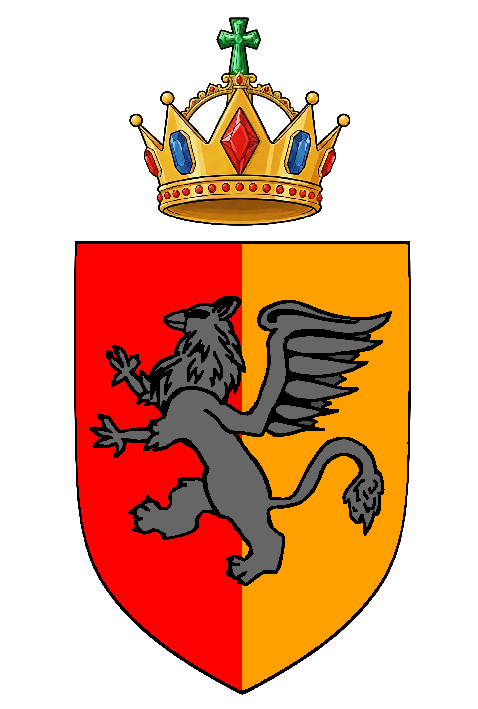

Krajowy Rejestr Arystokracji
Urzędowy rejestr publiczny Korony Krulestwa Multikont
Prowadzony na podstawie art. 43 Dekretu Krula Multikont z dnia 24.02.2026 r. o organizacji arystokracji (Kr. Dz. U. z 2026 r. poz. 49).
Organ rejestrowy: Wiceprzewodniczący Rządu Koronnego